7 odors. Pairs of odors are highly similar. Tested at 2 concentrations.
Contents
- List of odors
- Anterior piriform cortex
- Tuning curves (auROC)
- Grand average of olfactory responses and Fano factor
- Timecourse of the distance between odors
- Timecourse of the total variance explained by the first three PCs
- Timecourse of linear classification
- Timecourse of spike count distributions
- Timecourse of the lifetime sparseness
- Timecourse of the population sparseness
- Similarity between tuning profiles of units recorded from the same shank
- Classification accuracy at different sniffs and with different windows (number of sniffs) - High concentrations
- Classification accuracy with concatenations of sniffs - High concentrations
- Classification accuracy at different sniffs and with different windows (number of sniffs) - Low concentrations
- Classification accuracy with concatenations of sniffs - Low concentrations
- Postero-lateral cortical amygdala
- Tuning curves (auROC)
- Grand average of olfactory responses and Fano factor
- Timecourse of the sistance between odors
- Timecourse of the total variance explained by the first three PCs
- Timecourse of linear classification
- Timecourse of spike count distributions
- Timecourse of the lifetime sparseness
- Timecourse of the population sparseness
- Similarity between tuning profiles of units recorded from the same shank
- Classification accuracy at different sniffs and with different windows (number of sniffs) - High concentrations
- Classification accuracy with concatenations of sniffs - High concentrations
- Classification accuracy at different sniffs and with different windows (number of sniffs) - Low concentrations
- Classification accuracy with concatenations of sniffs - Low concentrations
List of odors
2,4,5-methylthiazole 4,5-methylthiazole 5-methylthiazole isoamyacetate isobutylacetate butanedione exanedione 2-phenyl-ethanol
Anterior piriform cortex
Number of responsive units: 80 Number of cell-odor pairs: 483
Tuning curves (auROC)
The response is taken over the first 4 sniffs.
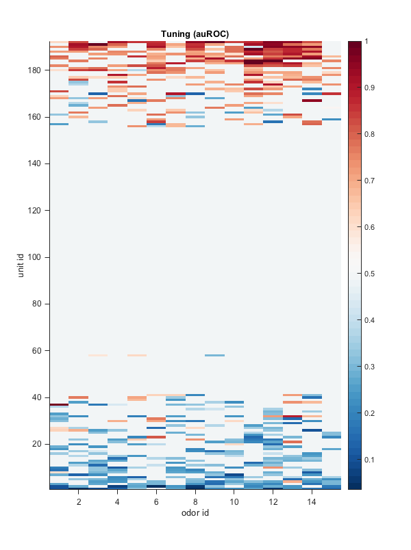Grand average of olfactory responses and Fano factor
I used mean-matching (red, for each time bin I take only the cell-odor spike counts that don't exceed the overall firing and I regress the Fano factor), but I'm also showing spike counts and variances without mean-matching (black). The responses included in the left plots are aligne only to the first sniff. Note that the sub-sniff representation using a angle timescale can be misleading: there are of course more spikes in the exhalation phase because it lasts longer.
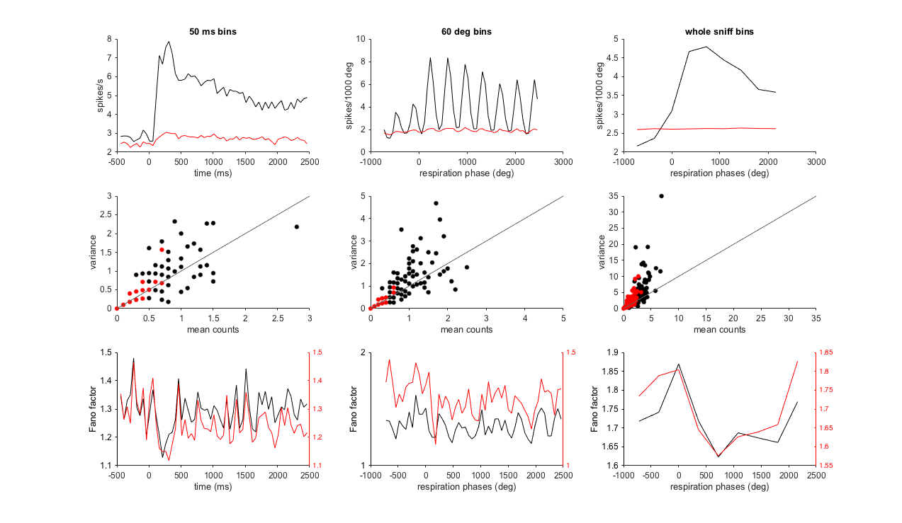Timecourse of the distance between odors
Here I aligned each sniff and the timescale is in ms and not in deg. I divide each sniff in two bins of 100 ms each.
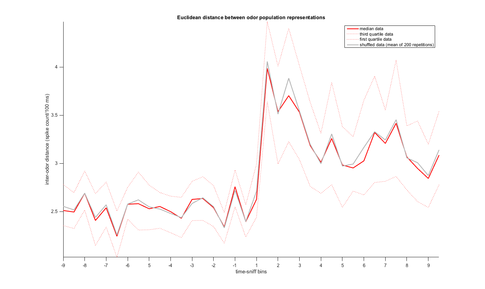Timecourse of the total variance explained by the first three PCs
Here I aligned each sniff and the timescale is in ms and not in deg. I divide each sniff in two bins of 100 ms each.
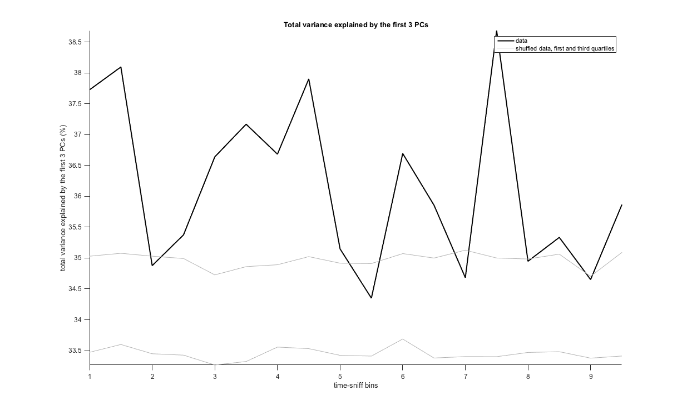Timecourse of linear classification
Here I aligned each sniff and the timescale is in ms and not in deg. I divide each sniff in two bins of 100 ms each.
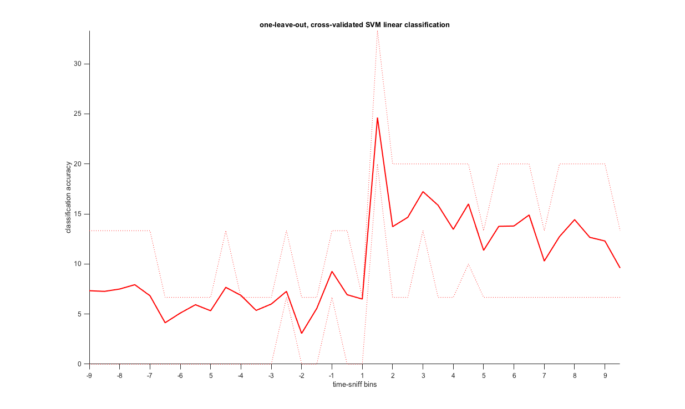Timecourse of spike count distributions
Each row is half a sniff (100 ms). Black is odor off and red is odor on.
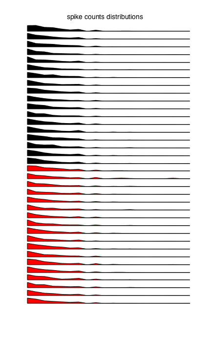Timecourse of the lifetime sparseness
Each row is half a sniff (100 ms). Black is odor off and red is odor on.
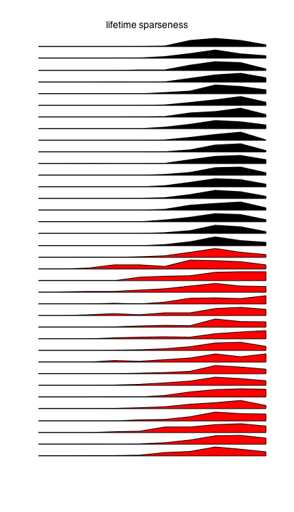Timecourse of the population sparseness
Each row is half a sniff (100 ms). Black is odor off and red is odor on.
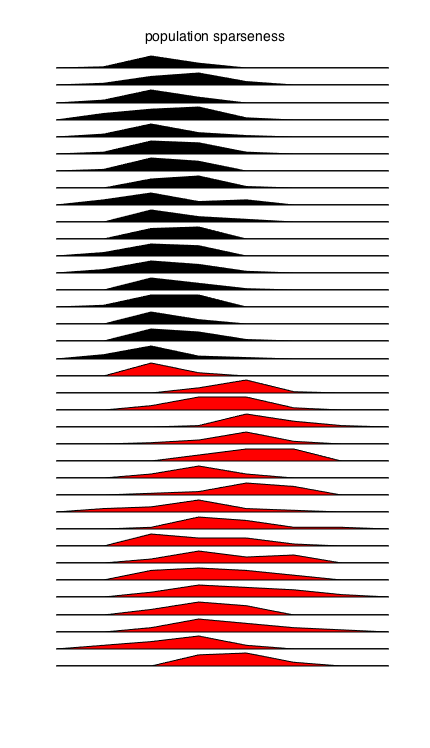Similarity between tuning profiles of units recorded from the same shank
Here I consider the response in a time window of 4 sniffs
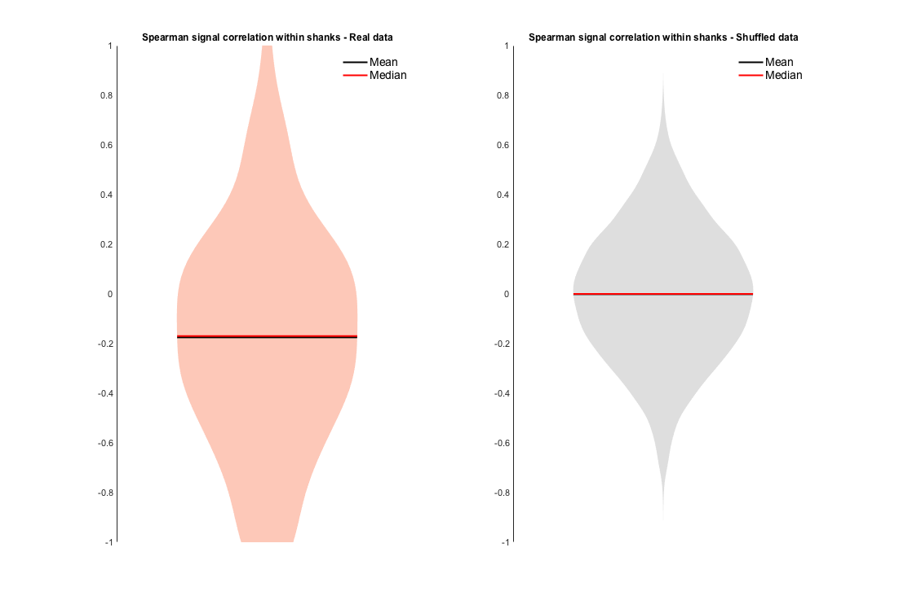Classification accuracy at different sniffs and with different windows (number of sniffs) - High concentrations
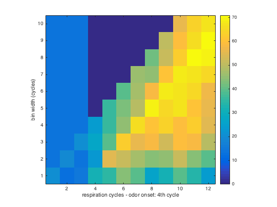Classification accuracy with concatenations of sniffs - High concentrations
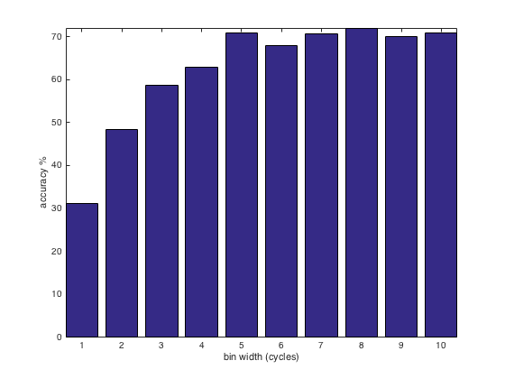Classification accuracy at different sniffs and with different windows (number of sniffs) - Low concentrations
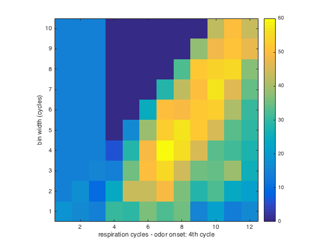Classification accuracy with concatenations of sniffs - Low concentrations
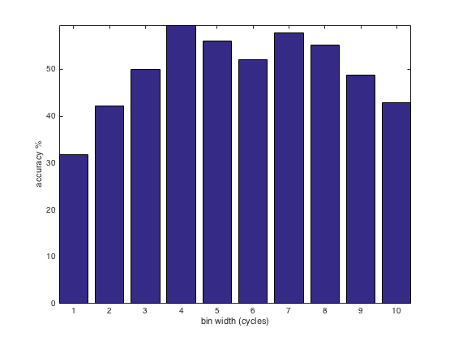Postero-lateral cortical amygdala
Number of responsive units: 56 Number of cell-odor pairs: 271
Tuning curves (auROC)
The response is taken over the first 4 sniffs.
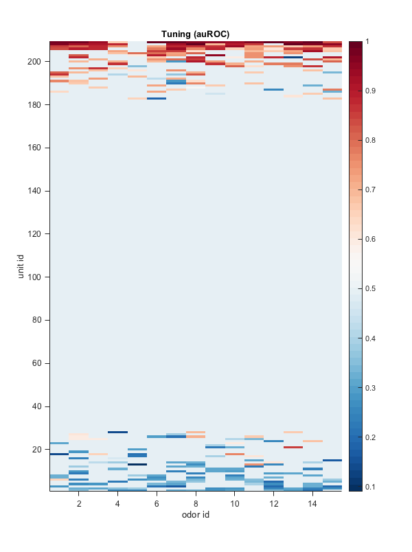Grand average of olfactory responses and Fano factor
I used mean-matching (red, for each time bin I take only the cell-odor spike counts that don't exceed the overall firing and I regress the Fano factor), but I'm also showing spike counts and variances without mean-matching (black). The responses included in the left plots are aligne only to the first sniff. Note that the sub-sniff representation using a angle timescale can be misleading: there are of course more spikes in the exhalation phase because it lasts longer.
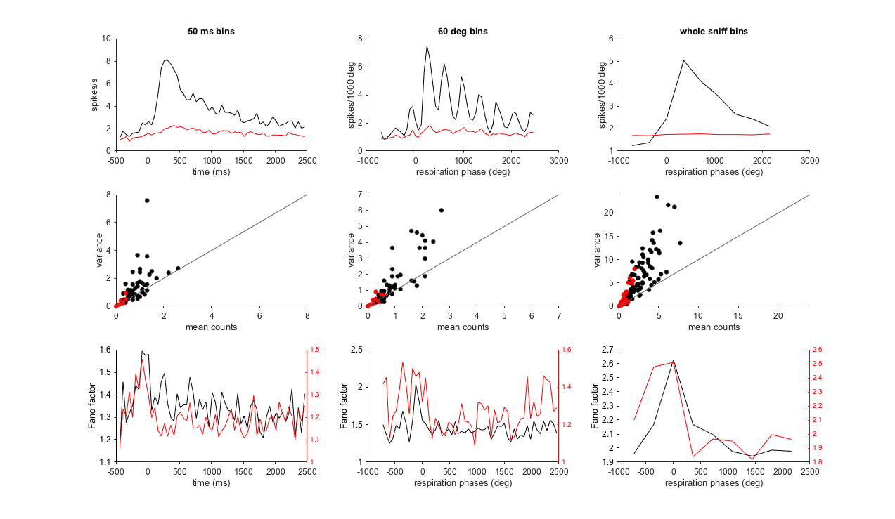Timecourse of the sistance between odors
Here I aligned each sniff and the timescale is in ms and not in deg. I divide each sniff in two bins of 100 ms each.
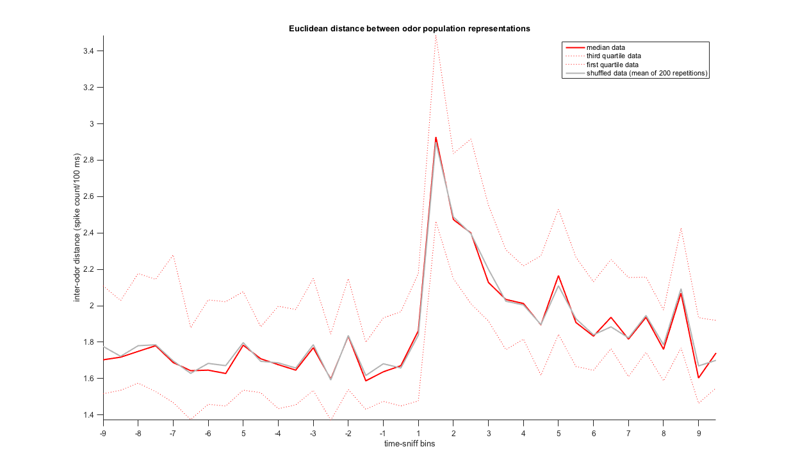Timecourse of the total variance explained by the first three PCs
Here I aligned each sniff and the timescale is in ms and not in deg. I divide each sniff in two bins of 100 ms each.
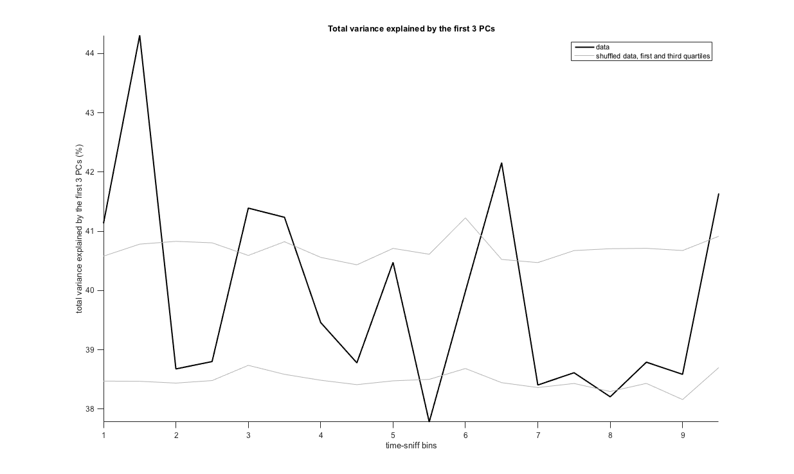Timecourse of linear classification
Here I aligned each sniff and the timescale is in ms and not in deg. I divide each sniff in two bins of 100 ms each.
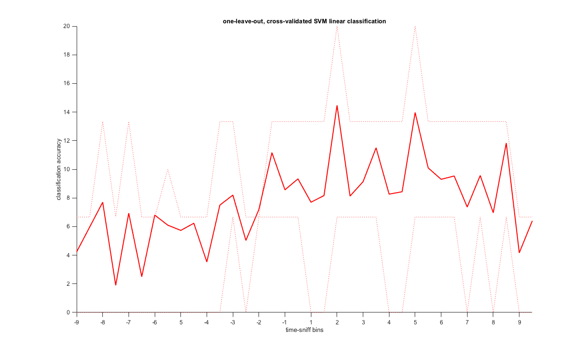Timecourse of spike count distributions
Each row is half a sniff (100 ms). Black is odor off and red is odor on.
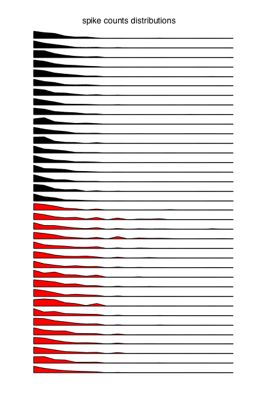Timecourse of the lifetime sparseness
Each row is half a sniff (100 ms). Black is odor off and red is odor on.
Timecourse of the population sparseness
Each row is half a sniff (100 ms). Black is odor off and red is odor on.
Similarity between tuning profiles of units recorded from the same shank
Here I consider the response in a time window of 4 sniffs